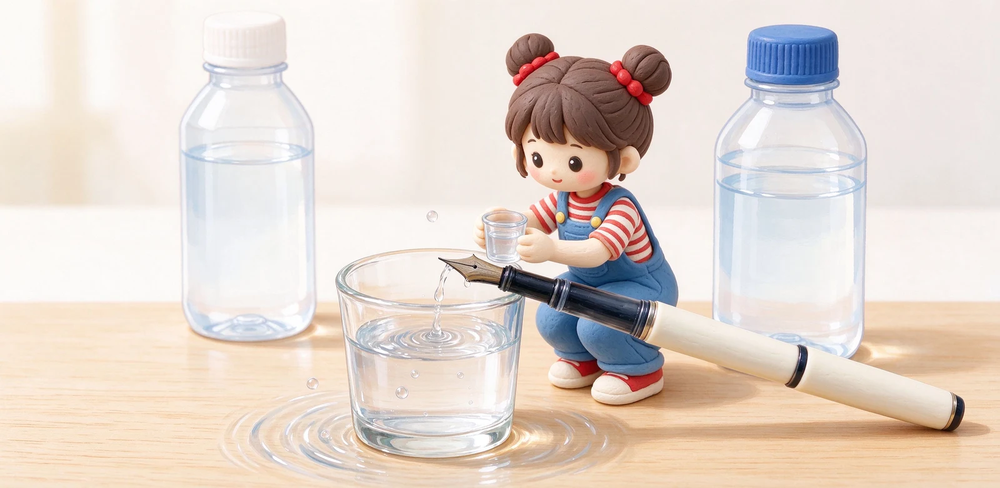

語意摘要：鋼筆保養的核心是『定時沖水』。天天用同一罐墨的筆，大約一到三個月沖一次即可；但只要換顏色、或放著兩週以上不寫，就一定要先洗乾淨。流程是拆開筆尖段、用室溫清水（最好蒸餾水）沖到沒有顏色，再陰乾，絕對別用熱水、酒精或硬拆筆舌。
多久洗一次？看使用頻率與情境
很多人以為鋼筆要天天洗，其實剛好相反——天天寫同一罐墨的筆，內部一直是濕的，反而不容易乾掉結塊。寫樂官方給的建議是：即使常用，也最好兩到三個月定期洗一次。真正該洗的時機，是下面這幾個：
| 情境 | 要不要洗 | 原因 |
|---|---|---|
| 天天用同一罐墨 | 1–3 個月沖一次 | 預防紙塵與墨渣累積 |
| 要換不同顏色 | 一定要洗 | 避免兩色在筆內混濁、起化學反應 |
| 放著超過兩週不寫 | 收起來前先洗 | 墨水在筆舌乾掉會塞住出墨 |
| 出墨變弱、斷墨 | 立刻洗 | 多半是卡了紙塵或乾墨 |
| 用過閃粉／顏料墨 | 較常洗 | 顆粒容易沉澱在筆舌 |

正確清洗步驟：沖到水變清為止
清洗不難，重點是『用室溫水、沖到沒有顏色』。不論卡式或吸墨器筆，流程大致如下：
- 拔掉卡水或取下吸墨器，把筆尖段從筆握轉下來。
- 用室溫自來水（最好蒸餾水）沖筆尖與筆舌，讓水從筆尖那頭流進、從後面流出。
- 吸墨器筆可以裝上空吸墨器、反覆吸水再擠乾，像幫浦一樣把內部沖乾。
- 繼續沖直到流出的水完全沒有顏色、透明為止。
- 用軟布或衛生紙輕吸水珠，筆尖段直立陰乾半天。
活塞與真空筆怎麼洗
活塞、真空這類把整支筆桿當儲墨槽的，不能拆筆舌，洗法是『讓它自己吸水』。把筆尖泡進室溫清水裡，像上墨一樣轉活塞或抽真空吸滿水，再全部擠掉，重複好幾次，直到吸進去再擠出來的水完全沒有顏色。
乾掉結塊嚴重時，可以讓筆尖段泡在溫涼水裡幾小時（不要熱水），把硬化的墨先泡軟再沖。這種大容量筆因為機構藏在筆桿，平時更要靠『常沖』來保養，別等塞了才救。
換顏色的眉角：為什麼不能直接抽
很多人想換墨水顏色，直接就吸新墨，結果寫出來是灰撲撲的混色。原因是筆縫與筆舌的鰭片縫隙裡還卡著舊墨，直接混會讓新墨變髒，嚴重時不同配方還可能起化學反應、凝固塞住。
正確做法是先照上面步驟把筆沖到水完全透明，再吸新墨。換色第一次寫出來若還有淡淡舊色，畫幾行線讓它帶掉即可。
長期收筆與旅行前的處理
要把筆收起來幾週或幾個月，或要帶出遠門，收筆前一定要把墨清空、洗乾淨再陰乾——筆裡留著墨水放兩週以上，回到筆上多半會發現不出水。旅行時若不想洗，建議改用卡水，並讓筆尖朝上放。
- 收進筆盒前：筆尖段與筆桿都要乾，避免內部長霉。
- 常溫、避免陽光直射與車內高溫，高溫會讓墨水變質、筆滲墨。
- 卡水筆長放前，最好還是把卡水拔出來，別插著放。
常見問題 FAQ
鋼筆到底多久要洗一次？
換墨水顏色可以直接吸新的嗎？
可以用熱水或酒精洗嗎？
筆乾掉了、泡水泡多久？
出門或旅行要洗筆嗎？
資料來源與核實依據
- How to care for fountain pens（建議兩到三個月清洗、換色要洗）（Sailor Pen 官方）
- How to Clean a Fountain Pen（何時清洗、4–6 週定期沖）（The Pen Archive）
- Fountain Pen Cleaning Kit: Fix Dried Ink（無熱水、無酒精、勿硬拆）（Fountain Pen Revolution）
- Fountain Pen Maintenance & Care（換色必洗、長期收納前清洗）（Ink Palette）
相關文章推薦

鋼筆摔了、漏墨、不出水怎麼辦？常見故障自救與送修判斷
鋼筆九成的『壞掉』其實是不出水、漏墨或刮紙這三類，先洗、再對齊筆尖、檢查卡水與氣密，多數能自救；真的摔歪結構或筆舌裂開，才需要送修。

卡式、吸墨器、活塞、真空上墨差別？四種鋼筆上墨機制優缺點
上墨方式的核心矛盾只有一個：裝得多就麻煩、裝得少就方便。卡式最省事但容量小，活塞真空裝得多但只喝瓶裝墨，中間的吸墨器是多數人的平衡點。

鋼筆新手完全指南：第一次買鋼筆前該懂的 10 件事
鋼筆不難入門，難的是第一支就買對：筆尖選 F、預算抓 300 到 800 元、先從卡式墨水管開始，九成新手不會後悔。